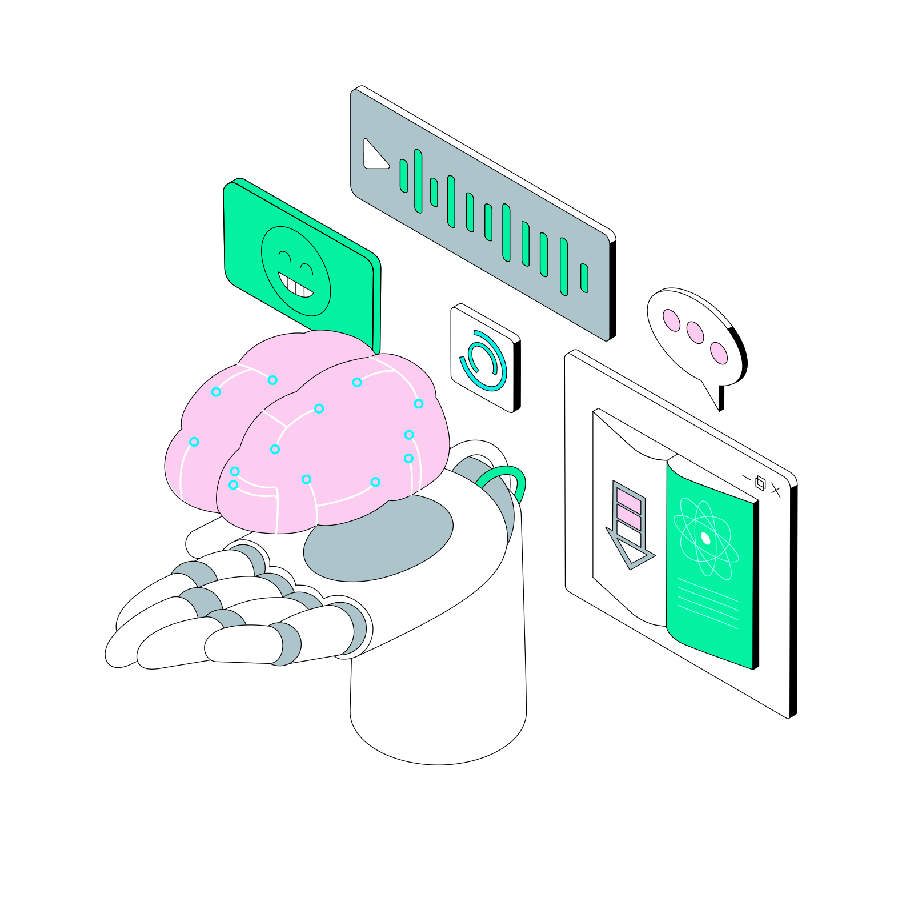
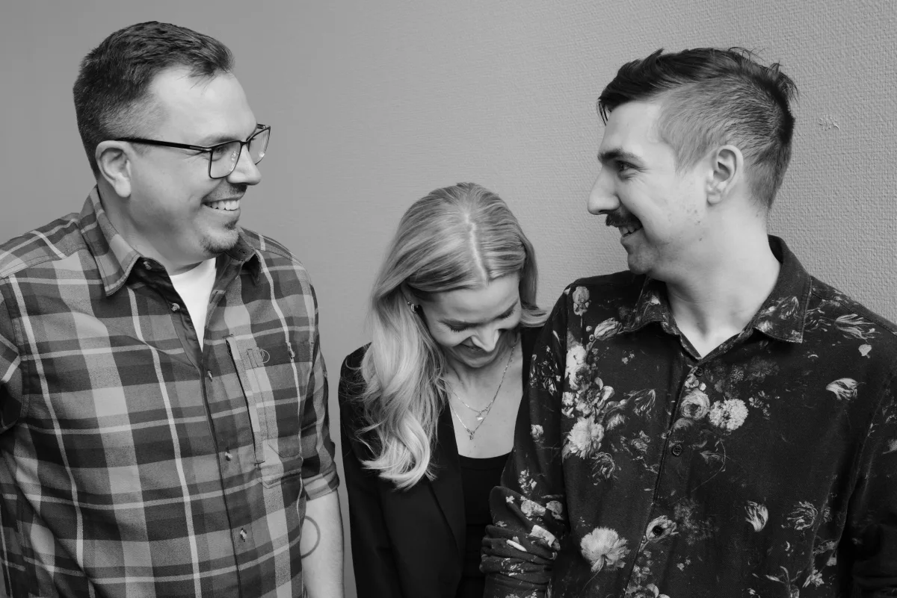
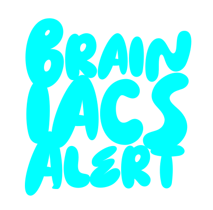
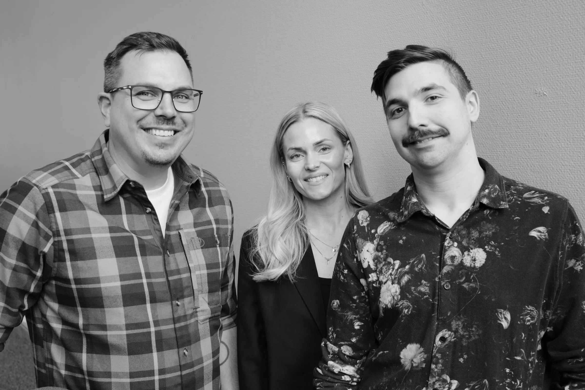

AI, systemutveckling och tekniskt stöd
som fungerar i vardagen.
Det händer väldigt mycket just nu. Nya möjligheter, nya krav och många beslut som behöver tas. Vi arbetar nära teamet och verksamheten, med fokus på att få saker att fungera, inte bara se bra ut på papper. Nya initiativ, starkare team och bättre teknikstöd. Konkret och utan omvägar.

Om oss
Huvudkontoret är ett konsultbolag i Luleå med fokus på AI, systemutveckling och teknisk rådgivning.
Vi är tre grundare med erfarenhet från både stora organisationer och mindre bolag. Vi arbetar nära verksamhet och teknik, med ansvar hela vägen från beslut till leverans.
Huvudkontoret startades utifrån övertygelsen att det finns ett bättre sätt att arbeta. Färre omvägar, tydligare ansvar och mer fokus på det som faktiskt ska bli klart.


Vi täcker både utveckling och hur AI används i
organisationer, från riktlinjer och policys till utbildning
och arbetssätt som faktiskt används i praktiken. Det ska
vara lätt att förstå, enkelt att följa upp och möjligt att
visa vad det ger.
Inget överdrivet. Inget som låter bättre än det är.
Lokalt förankrat i Luleå, med vana att arbeta nära och få
saker att hända.
Vad vi erbjuder
Nya initiativ, högre tempo, starkare team och bättre teknikstöd. När det behöver hända på riktigt finns vi nära till hands.
Kom igångVåra tjänster
AI som fungerar i vardagen, från riktlinjer och policies till automatiserade arbetsflöden.
Webbtjänster, appar, API:er, integrationer och moderna system byggda för att hålla.
Arkitektur, teknikval och beslut som genomförs i verklighet och med säkerhet.
Seniora utvecklare, tech leads och teknisk kompetens som träder fram dag ett.
Rätt nivå och tryggare beslut i rekryteringen.
Från idé till MVP: proof of concept och nya digitala tjänster.
AI i praktiken
Potentialen finns redan i befintliga system, processer och arbetsätt. Det viktiga är att börja nyttan redan idag.
Automatisering, beslutsstöd, intern effektivisering och smartare kundresor är vanliga första steg. Vi erbjuder också utbildningar och workshops för verksamheter som vill komma igång på rätt sätt.
